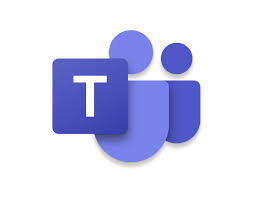
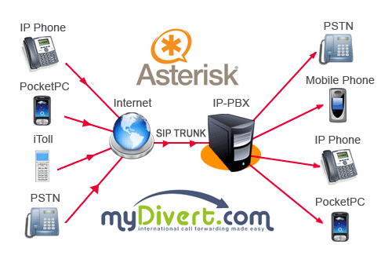
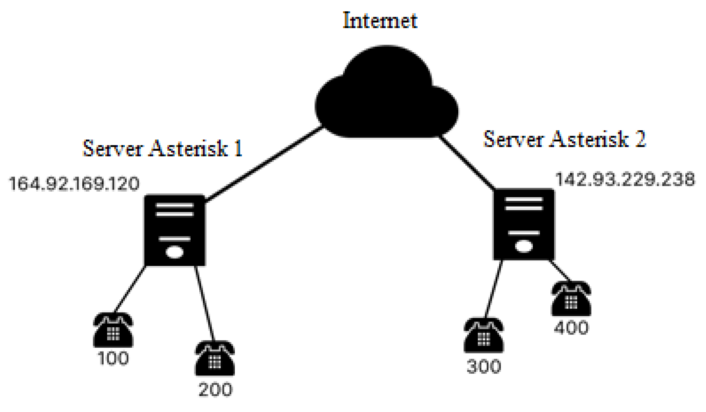
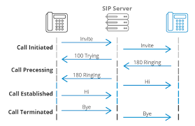
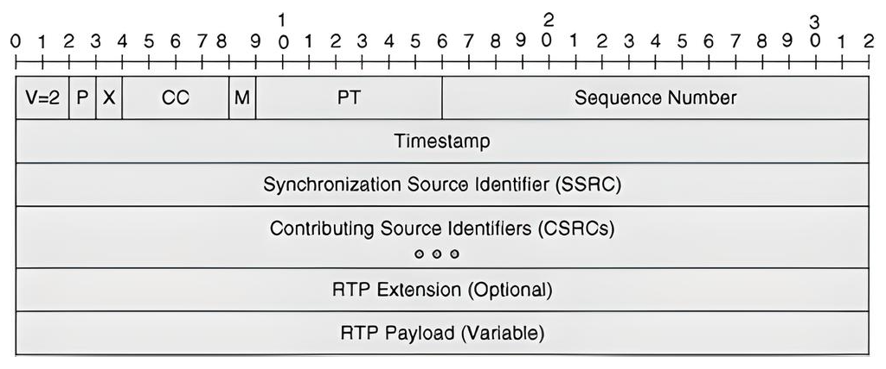

State of the Art in VoIP Conferencing
Alternatives in VoIP Conferencing
When it comes to VoIP conferencing, there are many solutions available, ranging from open source to commercial platforms. Some of the main alternatives are:
- Jitsi: A free and open source video and audio conferencing platform. It supports web-based meetings, screen sharing, and group chat. Jitsi is popular for small teams or educational purposes because it can be self-hosted and does not require expensive licenses.
- FreeSWITCH with mod_conference: FreeSWITCH is another open source PBX system, and the mod_conference module provides audio conferencing capabilities. It is very flexible and designed for advanced telephony setups, but it is more complex to configure compared to Asterisk.
- Zoom: One of the most popular commercial conferencing platforms. Zoom provides video, audio, chat, and webinar features. It is cloud-based and very user-friendly, but requires a subscription for advanced features.
- Microsoft Teams: A commercial collaboration tool integrated with Microsoft 365. Teams provides VoIP, chat, file sharing, and video conferencing. It is widely used in enterprises, especially those already using Microsoft products.
Each solution has different strengths and weaknesses. Open source solutions like Asterisk, Jitsi, and FreeSWITCH offer flexibility and full control, while commercial platforms like Zoom and Teams prioritize ease of use, reliability, and integration with other services.

Position of Asterisk within VoIP Systems
Asterisk is a core VoIP server platform that can act as an IP PBX, a VoIP gateway, or a conference server. Its position within a VoIP ecosystem is usually at the center of call management:
- It handles the signaling and routing of calls between users, devices, and external networks.
- It provides features such as voicemail, IVR menus, call queues, and audio conferencing.
- It can interact with both open source and commercial endpoints, bridging different systems together.
In comparison, other conferencing platforms like Zoom or Teams are usually “all-in-one” cloud services. Asterisk, on the other hand, is self-hosted and gives you full control over the infrastructure and configuration. This makes it very popular for organizations that need custom setups, privacy, or integration with existing telephony systems.


Protocols Involved in VoIP Conferencing
Asterisk and other VoIP systems rely on several key protocols to make communication possible:
- SIP (Session Initiation Protocol): The standard protocol used to set up, manage, and terminate voice or video calls. SIP tells the endpoints (phones, softphones, apps) how to connect and negotiate call parameters.
- RTP (Real-Time Transport Protocol): Responsible for delivering the actual audio or video data during a call. While SIP manages the session, RTP carries the voice or video packets.
- PJSIP (PJ Project SIP library): A specific implementation of SIP used by Asterisk and some other systems. PJSIP supports modern features, NAT traversal, and multiple transport protocols, making it reliable and scalable for complex VoIP setups.
Understanding these protocols is important because they define how calls are initiated, transmitted, and maintained, which directly affects call quality, latency, and reliability.
SIP — Session Initiation Protocol
SIP handles the setup, management, and termination of VoIP calls. It registers devices, negotiates codecs, and controls how endpoints communicate. Because SIP uses simple text-based messages, it is easy to debug and widely supported across networks and devices.
The diagram below shows a simplified SIP call flow. One phone sends an INVITE, followed by server responses like 100 Trying and 180 Ringing. After the call is accepted, voice data flows between both endpoints. When either party hangs up, a BYE message cleanly terminates the session. SIP manages every step of this process.

RTP — Real-Time Transport Protocol
RTP carries the actual audio stream once a call is established. It sends the voice in small packets with timestamps to ensure the sound plays smoothly and in the correct order. Working together with RTCP, it monitors packet loss and delay to maintain call quality. With SRTP, encryption can be applied, making VoIP calls secure from eavesdropping.
The image illustrates the transition from call setup to media transmission in a VoIP call. SIP (Session Initiation Protocol) first handles signaling by setting up, managing, and ending the call. Once the call is established, RTP (Real-Time Transport Protocol) takes over to carry the actual audio or video streams. RTP breaks the media into small packets with timestamps to ensure smooth and correctly ordered playback. RTCP monitors packet loss and delay. SRTP can encrypt the stream to make calls secure from eavesdropping.

The image illustrates an RTP packet’s structure. It includes a header containing version , padding, extension flags, CSRC count, marker bit, payload type, sequence number, timestamp, and SSRC (synchronization source identifier). Optionally, it can include header extensions or a list of contributing sources (CSRCs). After the header comes the media payload (audio or video), followed by optional padding bytes if the padding flag is set. This structure ensures media is delivered in order, on time, and identifiable during transmission.

PJSIP — Modern SIP Stack for Asterisk
PJSIP is a newer, more advanced SIP stack used in Asterisk. It provides better performance, scalability, and security compared to the older chan_sip driver. PJSIP supports multiple transport methods (UDP, TCP, TLS, WebSocket), strong NAT traversal through STUN/TURN/ICE, and allows one user to register on multiple devices at the same time. Its modular architecture makes it easier to configure and maintain complex VoIP deployments.